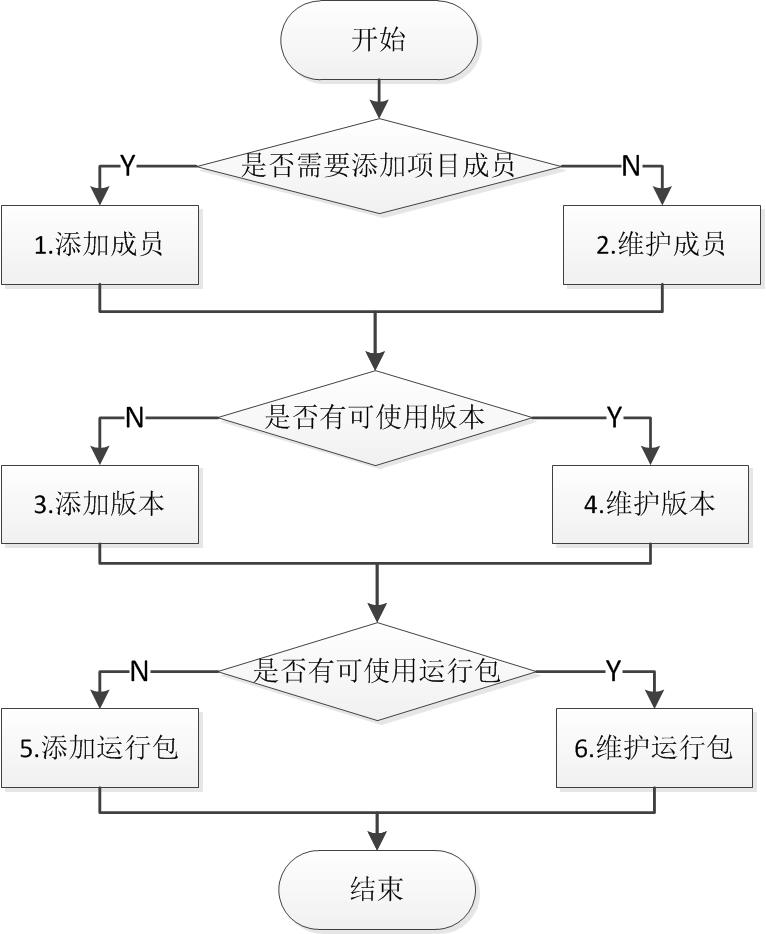

2.3 项目维护
项目维护的业务场景包含项目成员管理(C)、版本管理(D)、运行包管理(E)，具体流程操作如下图所示。

锐测盒子项目维护流程图
(1) 添加成员
项目成员管理的业务操作是指允许项目管理员添加项目成员和项目管理员，为用户赋予用户身份(项目管理员和项目成员)。具体操作步骤如下：
a) 项目管理员登录本系统，通过“项目”打开管理和维护的项目，点击“项目成员管理”菜单。
b) 选择添加的用户以及成员身份，点击添加按钮，为项目添加新成员详情参见“项目成员管理”章节。
(2) 维护成员
成员维护是指项目管理员编辑已有成员的用户身份。具体操作流程如下：
a) 项目管理员登录本系统，通过“项目”打开管理和维护的项目，点击“管理项目成员”菜单。
b) 选择某个项目成员或项目管理员，切换用户身份。
(3) 添加版本
添加版本是指项目管理员和项目成员添加版本，便于管理运行包。具体详情参见“版本管理”章节。操作流程如下：
a) 项目管理员 (项目成员)登录本系统，通过“项目”打开管理和维护的项目，点击“版本管理”菜单。
b) 进入版本管理页面，输入版本名称和版本状态，添加新版本。
(4) 维护版本
版本维护是指项目管理员和项目成员更改项目状态。状态包括开发中、测试中、已发布三种。详情参见“版本管理”章节。
(5) 添加运行包
添加运行包是指项目管理员和项目成员添加上传运行包，统一化管理和维护，减少用户上传运行包流程，详情请参见“运行包管理”章节。
(6) 维护版本
维护运行包是指项目管理员和项目成员下载和删除已有运行包。详情参见“运行包管理”章节。